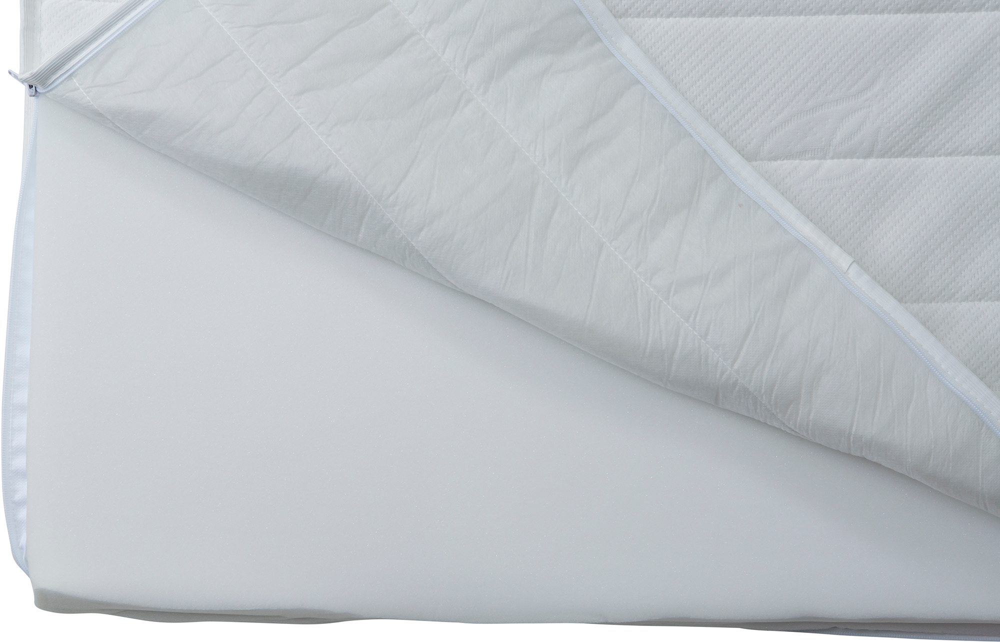
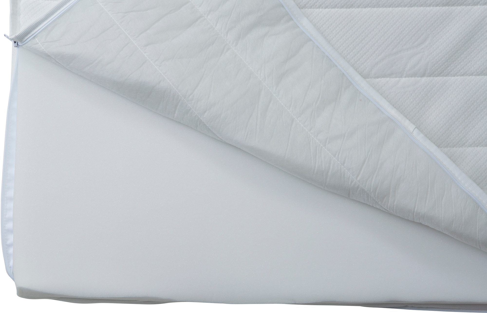

Moon Bronze Basic mattress topper 90x200x5cm
197750
 


Description
The Moon Bronze Basic mattress topper offers an affordable and comfortable enhancement to your sleep experience. Sized at 90x200x5 cm, this foam topper features a soft, light gray surface designed to improve mattress comfort and extend mattress life. As part of the NEST & LIVING collection, it adds gentle support by evenly distributing body weight and relieving pressure points. Easy to place and lightweight for convenient handling, this topper is an excellent choice for those seeking a simple yet effective upgrade to their bed without sacrificing quality.
Technical specifications
| Size | 90 × 200 cm |
|---|---|
| Thickness | 5 cm |
| Tier | Bronze |
| Color | Light gray |
| Material | Foam |